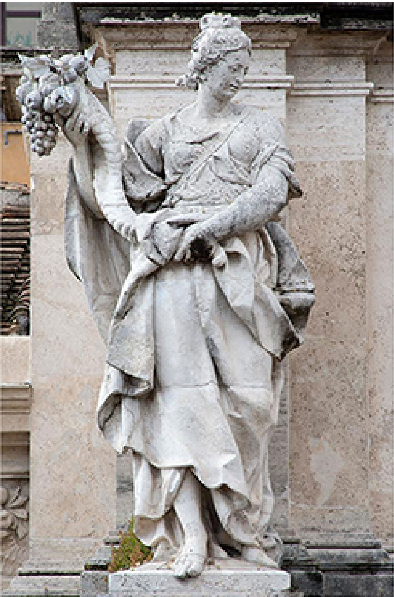

|  | ||
|
|
||
| Mirando hacia la parte superior de la fuente, verás cuatro estatuas, cada una de ellas sobre un pilar. Estas estatuas representan los efectos beneficiosos de la lluvia sobre la fertilidad de la Tierra y los principales productos que dependen del suministro de agua. Abundancia de Frutos: sosteniendo un cuerno de abundancia |